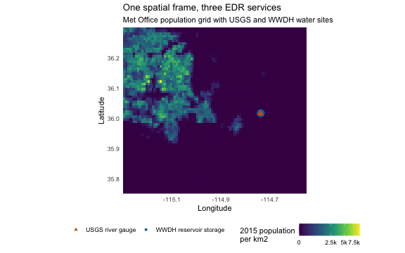
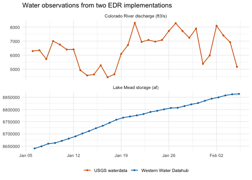

Cross-endpoint water context: Lake Mead
Source:vignettes/cross-endpoint-water-context.Rmd
cross-endpoint-water-context.RmdAn EDR workflow becomes more useful when coverages from different services can share an analysis without pretending they have the same shape. This example uses one Lake Mead/Las Vegas study area and three live implementations:
- the Met Office Labs
global_pop_densitycollection, queried as anareagrid; - the USGS waterdata
daily-edrcollection, queried at the Colorado River gauge below Hoover Dam; and - the Western Water Datahub (WWDH)
rise-edrcollection, queried with acubethat contains Lake Mead reservoir storage.
Together they exercise a CoverageJSON Grid, a single
PointSeries, and a CoverageCollection of
temporal point data. The spatial layer supplies human context, while the
two water layers remain separate series with their own parameters and
units.
The displayed results were retrieved on 2026-07-10 and precomputed from the live endpoints. Package builds therefore stay deterministic and offline. The Met Office Labs service is a technical demonstrator, not an operational dependency; its collections and behavior can change without notice.
1. Use one bounded study area
library(edr4r)
library(ggplot2)
usgs <- edr_client(
"https://api.waterdata.usgs.gov/ogcapi/beta",
timeout = 60,
max_tries = 1
)
wwdh <- edr_client(
"https://api.wwdh.internetofwater.app",
timeout = 60,
max_tries = 1
)
met <- edr_client(
"https://labs.metoffice.gov.uk/edr",
timeout = 60,
max_tries = 1
)
study_bbox <- c(-115.30, 35.75, -114.55, 36.30)
# minx miny maxx maxyThe box includes Las Vegas, Hoover Dam, and the western part of Lake Mead. It is intentionally small: the population request produces only a few thousand grid cells, and the WWDH cube contains one matching reservoir coverage.
Capability discovery should guide the verb choice. The three collections do not advertise an identical surface:
capability_check <- data.frame(
endpoint = c("Met Office Labs", "USGS waterdata", "WWDH"),
collection = c("global_pop_density", "daily-edr", "rise-edr"),
query = c("area", "locations", "cube"),
supported = c(
edr_supports(met, "global_pop_density", query = "area"),
edr_supports(usgs, "daily-edr", query = "locations"),
edr_supports(wwdh, "rise-edr", query = "cube")
)
)
knitr::kable(capability_check)| endpoint | collection | query | supported |
|---|---|---|---|
| Met Office Labs | global_pop_density | area | TRUE |
| USGS waterdata | daily-edr | locations | TRUE |
| WWDH | rise-edr | cube | TRUE |
daily-edr advertises only the EDR locations
query, whose individual location path is what
edr_location() calls. WWDH can use cube for a
spatially bounded bulk query, while the population collection advertises
area and is a static layer with no temporal extent.
2. Retrieve three coverage shapes
The Met Office collection describes 2015 global population density.
Convert the bounding box to a polygon and pass the CRS explicitly. The
demonstrator currently rejects this query without
crs = "EPSG:4326", even though that CRS appears in its
collection metadata.
population_ring <- rbind(
c(study_bbox[1], study_bbox[2]),
c(study_bbox[3], study_bbox[2]),
c(study_bbox[3], study_bbox[4]),
c(study_bbox[1], study_bbox[4])
)
population_response <- edr_area(
met,
"global_pop_density",
coords = population_ring,
parameter_name = "Pop_Density",
crs = "EPSG:4326"
)
population <- covjson_to_tibble(population_response)
stopifnot(
nrow(population) > 0L,
all(c("x", "y", "value") %in% names(population)),
any(is.finite(population$value), na.rm = TRUE)
)For USGS, request 31 daily discharge records from gauge
USGS-09421500, Colorado River below Hoover Dam. The
endpoint currently does not honor a datetime filter on an
individual location, so the example derives the matching WWDH interval
from the timestamps USGS actually returns.
flow_response <- edr_location(
usgs,
"daily-edr",
location_id = "USGS-09421500",
parameter_name = "00060", # discharge, ft3/s
limit = 31
)
flow <- covjson_to_tibble(flow_response)
flow <- flow[order(flow$datetime), ]
flow$coverage_id <- paste0("usgs:", flow$coverage_id)
stopifnot(
nrow(flow) > 0L,
all(c("coverage_id", "datetime", "x", "y", "value") %in% names(flow)),
length(unique(flow$coverage_id)) == 1L
)
flow_dates <- as.Date(flow$datetime, tz = "UTC")
water_interval <- paste(
min(flow_dates),
max(flow_dates) + 1,
sep = "/"
)
storage_response <- edr_cube(
wwdh,
"rise-edr",
bbox = study_bbox,
datetime = water_interval,
parameter_name = "3" # daily reservoir storage, acre-feet
)
storage <- covjson_to_tibble(storage_response)
storage <- storage[order(storage$datetime), ]
storage$coverage_id <- paste0("wwdh:", storage$coverage_id)
stopifnot(
nrow(storage) > 0L,
all(c("coverage_id", "datetime", "x", "y", "value") %in% names(storage)),
length(unique(storage$coverage_id)) == 1L
)The responses are all CoverageJSON, but they are not the same container or domain. Looking at this before row-binding is an important interoperability check:
coverage_signature <- function(source, response) {
body <- response$covjson
coverages <- if (identical(body$type, "CoverageCollection")) {
body$coverages
} else {
list(body)
}
domain_types <- vapply(coverages, function(coverage) {
domain_type <- coverage$domainType
if (is.null(domain_type) || length(domain_type) == 0L) {
domain_type <- coverage$domain$domainType
}
if (is.null(domain_type) || length(domain_type) == 0L) {
"not declared"
} else {
as.character(domain_type[[1]])
}
}, character(1))
axes <- unique(unlist(lapply(
coverages,
function(coverage) names(coverage$domain$axes)
)))
data.frame(
source = source,
container = body$type,
domain = paste(unique(domain_types), collapse = ", "),
axes = paste(axes, collapse = ", "),
coverages = length(coverages)
)
}
signatures <- rbind(
coverage_signature("Met Office population", population_response),
coverage_signature("USGS discharge", flow_response),
coverage_signature("WWDH storage", storage_response)
)
knitr::kable(signatures)| source | container | domain | axes | coverages |
|---|---|---|---|---|
| Met Office population | Coverage | Grid | x, y | 1 |
| USGS discharge | Coverage | PointSeries | t, x, y | 1 |
| WWDH storage | CoverageCollection | PointSeries | x, y, t | 1 |
USGS declares domainType inside its domain object, while
the WWDH child coverage declares the same concept beside the domain
object. Both expose the x, y, and
t axes needed for covjson_to_tibble() to
materialize the temporal rows. The parser does not require every server
to serialize equivalent coverages identically.
The tidy results make their sizes, time ranges, and units easy to compare without discarding provenance:
snapshot <- data.frame(
source = c("Met Office population", "USGS discharge", "WWDH storage"),
rows = c(nrow(population), nrow(flow), nrow(storage)),
start = c(
"static 2015",
format(min(flow$datetime), "%Y-%m-%d", tz = "UTC"),
format(min(storage$datetime), "%Y-%m-%d", tz = "UTC")
),
end = c(
"static 2015",
format(max(flow$datetime), "%Y-%m-%d", tz = "UTC"),
format(max(storage$datetime), "%Y-%m-%d", tz = "UTC")
),
unit = c(
"people per km2 (collection metadata)",
unique(flow$unit)[1],
unique(storage$unit)[1]
)
)
knitr::kable(snapshot)| source | rows | start | end | unit |
|---|---|---|---|---|
| Met Office population | 5940 | static 2015 | static 2015 | people per km2 (collection metadata) |
| USGS discharge | 31 | 2026-01-06 | 2026-02-05 | ft3/s |
| WWDH storage | 31 | 2026-01-06 | 2026-02-05 | af |
3. Put the grid and monitoring sites on one map
The population coverage is already a tidy
x/y grid. The water coverages carry their
station coordinates on every row, so one row per series is enough for an
overlay.
sites <- rbind(
data.frame(
source = "WWDH reservoir storage",
x = storage$x[1],
y = storage$y[1]
),
data.frame(
source = "USGS river gauge",
x = flow$x[1],
y = flow$y[1]
)
)
ggplot(population, aes(x = x, y = y)) +
geom_raster(aes(fill = value)) +
geom_point(
data = sites,
aes(x = x, y = y, colour = source, shape = source, size = source),
inherit.aes = FALSE
) +
scale_fill_viridis_c(
trans = "sqrt",
na.value = "transparent",
name = "2015 population\nper km2",
breaks = c(0, 2500, 5000, 7500),
labels = c("0", "2.5k", "5k", "7.5k")
) +
scale_colour_manual(
values = c(
"USGS river gauge" = "#D55E00",
"WWDH reservoir storage" = "#0072B2"
),
name = NULL
) +
scale_shape_manual(
values = c(
"USGS river gauge" = 17,
"WWDH reservoir storage" = 16
),
name = NULL
) +
scale_size_manual(
values = c(
"USGS river gauge" = 3,
"WWDH reservoir storage" = 5
),
guide = "none"
) +
coord_quickmap(
xlim = study_bbox[c(1, 3)],
ylim = study_bbox[c(2, 4)],
expand = FALSE
) +
labs(
title = "One spatial frame, three EDR services",
subtitle = "Met Office population grid with USGS and WWDH water sites",
x = "Longitude",
y = "Latitude"
) +
theme_minimal(base_size = 11) +
theme(legend.position = "bottom")
plot of chunk population-water-map
This is contextual rather than causal: the grid is a 2015 population-density estimate, while the water series are a later operational snapshot. It shows where monitoring sits relative to the Las Vegas population center; it does not claim that the layers are temporally matched. The two water coordinates are colocated at this map scale, so the smaller USGS triangle is drawn over the larger WWDH circle.
4. Compare the water series without mixing units
Both temporal coverages share the same tidy column contract, so they can be row-bound after adding source labels. Their values should not share one y scale: discharge and reservoir storage measure different things in different units. Faceting keeps that distinction visible.
flow$source <- "USGS waterdata"
flow$panel <- paste0("Colorado River discharge (", flow$unit, ")")
storage$source <- "Western Water Datahub"
storage$panel <- paste0("Lake Mead storage (", storage$unit, ")")
water <- vctrs::vec_rbind(flow, storage)
ggplot(water, aes(x = datetime, y = value, colour = source)) +
geom_line(linewidth = 0.7) +
geom_point(size = 1) +
facet_wrap(~panel, scales = "free_y", ncol = 1) +
scale_colour_manual(
values = c(
"USGS waterdata" = "#D55E00",
"Western Water Datahub" = "#0072B2"
),
name = NULL
) +
labs(
title = "Water observations from two EDR implementations",
x = NULL,
y = NULL
) +
theme_minimal(base_size = 11) +
theme(legend.position = "bottom")
plot of chunk water-series
What this pattern buys you
The common layer is the tidy output contract, not a claim that all EDR responses are interchangeable:
- inspect advertised capabilities before choosing a verb;
- keep bounding boxes, record counts, and time windows finite;
- preserve
source,parameter, andunitbefore combining rows; - map grid and point coordinates together, but facet unlike measurements;
- expect endpoint-specific details such as a required explicit CRS or an ignored datetime filter; and
- keep live demonstrators out of mandatory package checks.
Each response can still be sent to edr_plot(). The
population grid can also go directly to edr_map(), while
time-series coverage needs a location layer for station mapping.
Converting to tibbles is what makes the cross-endpoint composition
explicit and lets ordinary R plotting code combine only the parts that
are genuinely compatible.
The repository retains this article’s executable source as
vignettes/cross-endpoint-water-context.Rmd.orig.
Maintainers can refresh the baked outputs deliberately with:
Do that only when the three endpoints are reachable, then inspect the changed tables and figures before committing them. The executable source deliberately fails rather than baking an empty grid, an empty time series, or a changed multi-site WWDH result without review.